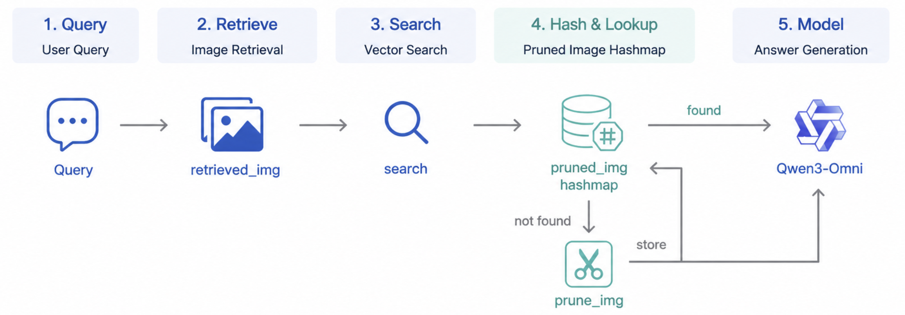

Query-Aware Visual Token Pruning and Disk Cache in Multimodal RAG
Query-conditioned image pruning for multimodal RAG to reduce visual token overhead for VLMs. By caching pruned images in a JSON index and reusing them for similar subsequent queries, the pipeline minimizes redundant computation and significantly lowers time to first token (TTFT) and end-to-end latency.
View Repository

SPHYRA
A black hole with SPH-based accretion disk simulation according to Newtonian gravitational dynamics and ray tracing bending tricks.
View Repository

Urban Change Detection
A custom model for automatically detecting urban infrastructure changes of New York City and Memphis from street view images of two different time periods.
View Repository